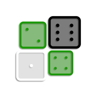

Ruleta · 0Discreto: solo a qué apostar. Normal: todas las opciones y la sugerida. Avanzado: probabilidades, pagos y más datos.
Desactivado: fichas con relleno de color. Activado: sin relleno, solo el texto en color (rojo y verde); los negros usan el color normal del texto.
El historial vive solo en este teléfono (dentro de la app instalada). Exporta de vez en cuando: si borras datos del sitio o desinstalas, se pierde.
Pega números (uno por línea o separados por comas) o filas del tiradas.csv de Python (negro,blanco,verde1,verde2). Se agregan al final.
Escribe 4 dígitos seguidos: negro, blanco, verde, verde (5324 = negro 5, blanco 3, verdes 2 y 4). Así se analiza cada dado verde por separado.
36 = paga 35 a 1. Ajústalo al pago real de tu máquina.